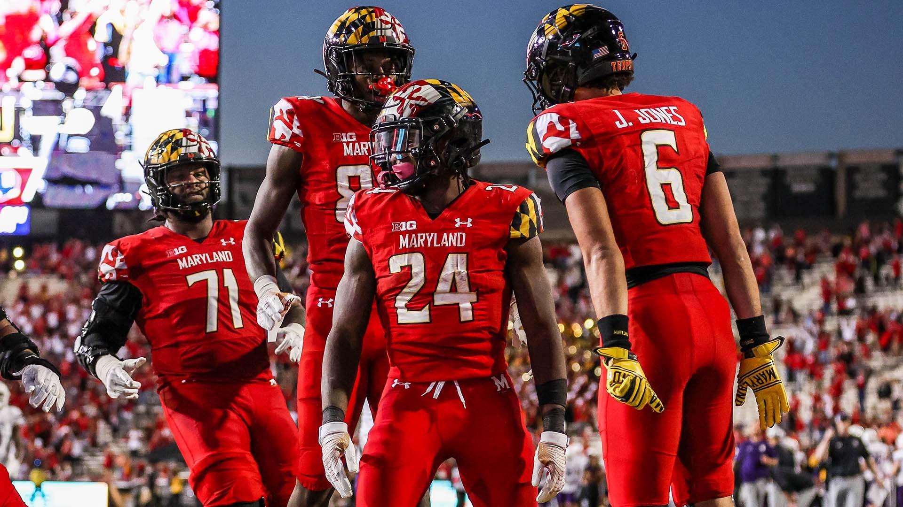

Since Mike Locksley took over as head coach, Maryland's football team has seen an upward trajectory, with their record improving from 3-9 in Locksley’s inaugural season to 8-5 over the past two years. However, despite these on-field improvements, the financial side of the program tells a different story.
Between the 2017-18 and the 2022-23 seasons, Maryland's football program experienced a decline in ticket sales revenue, aligning with a trend seen in two other Big Ten schools, as reported by Sportico. Maryland's game revenue per fan during the 2022 season was notably the lowest in the conference, standing at just $25.66 per attendee compared to the conference average of $52.57, with five schools making over $60 per fan.
“Every department reports revenues differently and there are several variables in those figures, so it’s hard to comment on them,” a team spokesperson said.
Sportico highlighted discrepancies in how schools calculate total revenue, with some including various components like parking, food services, bookstores, and student tickets. Despite this variability, ticket revenue remains a significant factor, and Maryland ranked lowest in ticket sales revenue in the Big Ten during the 2022-23 season.
Efforts to address these issues included promotional deals on season tickets and relocating visiting team ticket allotments to the upper level for the upcoming season. Additionally, plans for potential upgrades to SECU's video board and sound system are being considered.
While Maryland saw a notable increase in overall attendance from 2022 to 2023, particularly in marquee matchups against top opponents, challenges persist, especially in filling seats for less high-profile games. With upcoming home contests against a mix of opponents, including only a few potential marquee matchups, attendance remains a topic of interest in College Park.
“In comparison to the entire country, among returning FBS programs, Maryland had the greatest overall attendance percentage increase from 2022 to 2023, improving by 26.24%,” an athletic department spokesperson said.
Still, the program lagged behind the entire Big Ten and Terps teams of the past. Maryland's attendance spiked when Locksley was hired, but has regressed since. The coach has not been shy about sharing his displeaure, begging for fans to "pack the shell".
Penn State, Michigan and Ohio State, three of the Big Ten's top teams and revenue drivers, will not travel to College Park this upcoming season. Instead, the Terps will play home games against Villanova, USC, Iowa and others. With Taulia Tagovailoa exiting the fold, and no premeir opponents on the slate, it would not be surprising to see another drop in attendance. It's established a unique paradox. As Maryland continues to win, it's attendance continues to drop.
